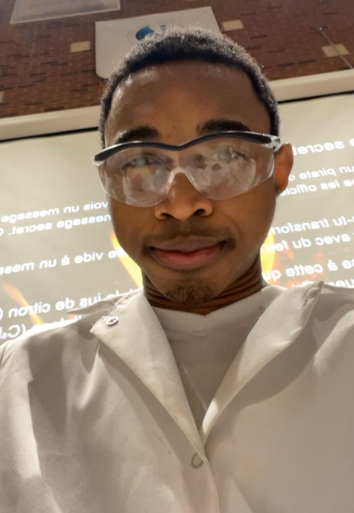
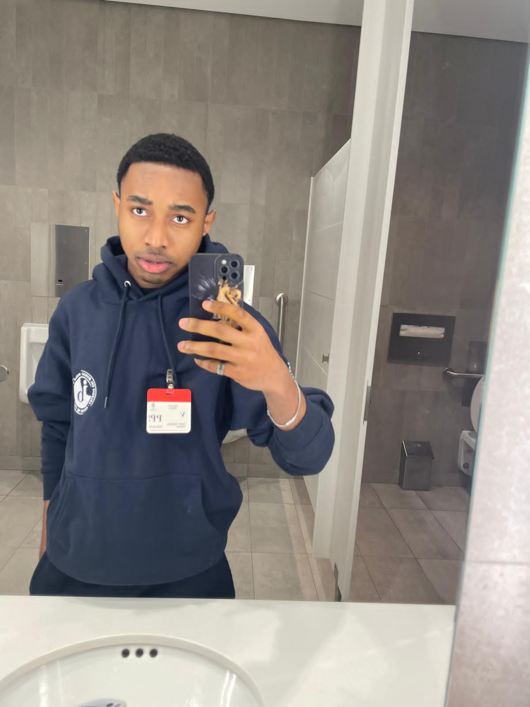
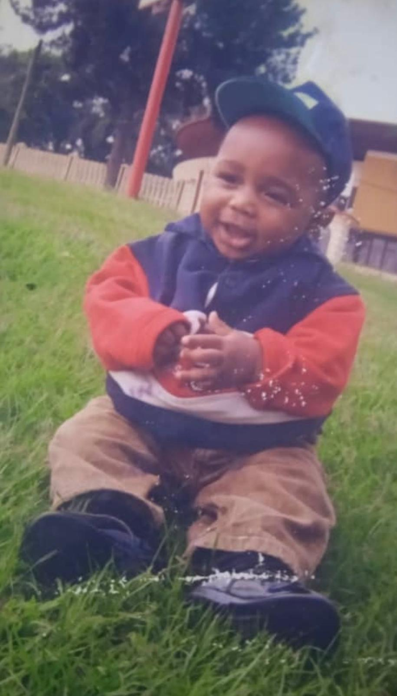
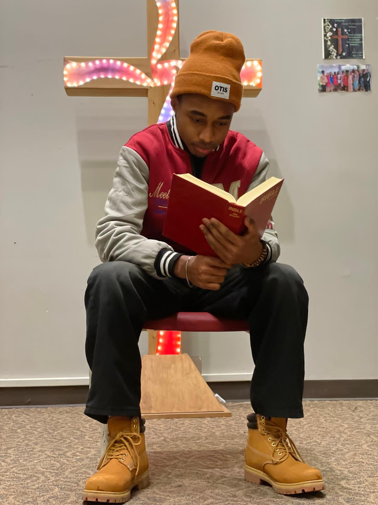
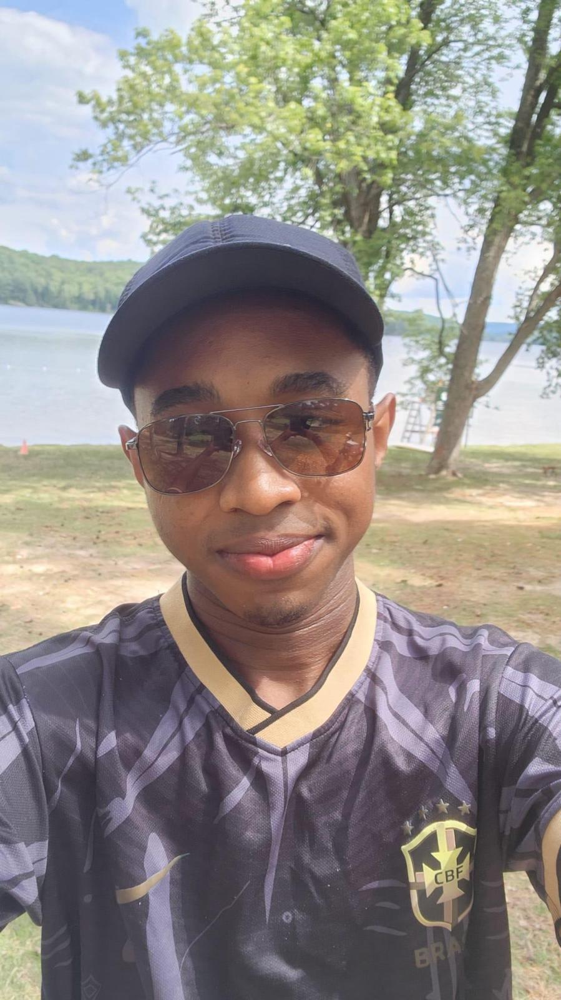

Qui je suis
Je m'appelle Perish Guialakong DemanouJe suis né le 2 juin 2008 au Cameroun, à Yaoundé, ce qui signifie que 2025 marquera mon dernier Noël en tant que mineur. J'ai 4 frères et sœurs, et nous vivons avec nos deux parents depuis maintenant deux ans à Ottawa. Je suis en 12e année BI.
Aussi insolite que mon prénom Perish — qui signifie littéralement « mourir » mais qui porte une toute autre signification émotionnelle dans ma famille — j'ai souvent l'habitude d'afficher une attitude différente de celle de mes pairs. Je suis quelqu'un qui observe avant d'agir, qui réfléchit profondément avant de parler, et qui s'engage avec conviction dans tout ce qu'il entreprend





Ma vision du CAS
Pour moi, le programme CAS n'est pas seulement une exigence académique — c'est une invitation à me dépasser et à contribuer à quelque chose de plus grand que moi-même. Venu du Cameroun et installé au Canada depuis peu, j'ai une sensibilité particulière aux enjeux de communauté, d'inclusion et d'entraide
Mes activités reflètent qui je suis : curieux,persévérant, et profondément attaché à ma communauté. A travers le programme cas j'aimerais adopter une approche extravertie pour m'impliquer d'avantage dans ma communauté et acquérir les compétences realtives à ce programme, soit: faire preuve à l'avenir de créativité, entreprendre des activités et répondre aux besoins environnants par des services.
Objectifs d'apprentissage
Le programme CAS vise 7 objectifs que je me suis engagé à atteindre à travers mes expériences :
Identifier mes points forts et développer les domaines à améliorer.
elever de nouveaux défis et développer de nouvelles compétences.
Initier et planifier des expériences CAS de manière autonome.
Faire preuve d'engagement et de persévérance sur la durée.
Démontrer les bénéfices du travail en collaboration.
M'engager dans des questions d'importance mondiale.
Reconnaître et réfléchir à l'éthique de mes choix et actions.